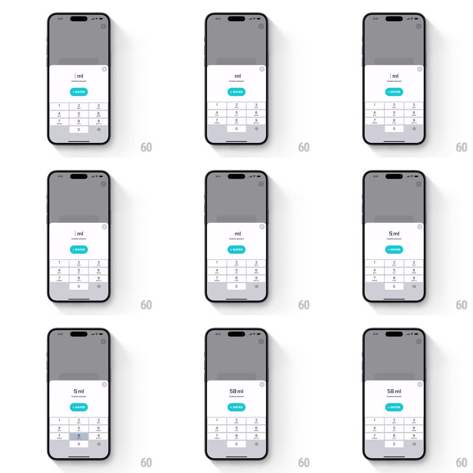

Media
Frame-by-frame

Rebuild this interaction 1:1: Waterllama's custom-amount sheet - type milliliters on a numeric keypad and each digit pops into the readout with a spring.

Rebuild this interaction 1:1: Waterllama's custom-amount sheet - type milliliters on a numeric keypad and each digit pops into the readout with a spring. ## Integration Integration: stack-agnostic spec - springs given as stiffness/damping, timed motions as duration + curve; map every value to your framework and animation library of choice. ## Scene The home screen (big glass with teal water, "250ml") dims under a white bottom sheet: a centered readout (digits + gray "ml", "Custom amount" beneath), a teal "+ WATER" pill, and a numeric keypad with letter sub-legends. ## Motion spec Pattern: springy per-digit input. - Sheet entrance: slides up over a 40% dim (spring ~360/28, 300ms); the readout shows a blinking caret. - Key press: the key highlights (gray-200 fill, instant) with a light haptic tick; the new digit enters the readout from below (translateY 14px + scale 0.7 to 1, spring ~480/22) while existing digits shift left with a quick spring (~420/26). - The "ml" unit stays pinned at the end, sliding with the digit group as it grows. - Backspace: the last digit pops out upward (reverse spring, 180ms) with a softer haptic. - The + WATER pill enables once a nonzero value exists (opacity 0.5 to 1, 150ms); tapping it presses (scale 0.95, 100ms), the sheet springs down, and the home glass's water level tweens up to the new total (600ms ease-out with a small surface wobble). - Input clamps at 4 digits; extra taps bounce the readout horizontally (+-6px shake, 200ms) as refusal. ## Calibration - Digit pop is quick and per-keystroke - typing fast should feel like stacking pops, not a queue. - Readout typography is large and centered; the unit never wraps or detaches. ## Reduced motion Digits appear instantly; sheet fades. ## Don't miss - The keypad keeps iOS letter sub-legends (ABC, DEF...) - it's a phone keypad, not a calculator. - The caret blinks only when the field is empty; once digits exist, it disappears.